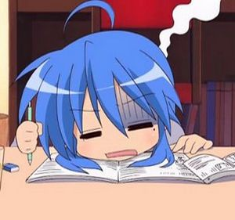

Instituto
 De: La Frikipedia, la enciclopedia extremadamente seria.
De: La Frikipedia, la enciclopedia extremadamente seria.
Vista lateral de un instituto
También llamado prostituto o instiputo, es un lugar de aprisonamiento de reclusos que, con la previa formación militar de los recreos y clases de gimnasia, se convertirán en funcionarios, oficinistas y/o soldados. En ningún caso se utilizarán los saberes aprendidos en sus clases, pero se servirán como conversación aburrida entre trabajadores.
Los Peligros del Instituto
Uno de ellos es el ir de pijo, llevar gafas, tener la cara llena de granos, llevar aparato y meterte con la gente, en el 99.9% de los casos estos individuos son el blanco de todas las especies del instituto.
Las típicas niñas cansinas, que te persiguen solo para insultarte y después salen corriendo, cuando les gritas : Como vengais paca el que voy a correr voy a ser yo, pero en vosotras!
Toparte con un profesor que necesite tu ayuda es otro gran peligro ya que te la pedirá en el tiempo libre y no podrás hacer los deberes que hallas dejado para el final.
Meterte en zonas XX, denominadas asi por estar llenas de frikis y empollones que te contagiarán para llevarte con ellos a ver Naruto.
Personajes Típicos de un Instituto
Vista frontal de un instituto
- Pijos y pijas: Por lo general llevan bastante dinero (lo que se ahorran por no haber comido), se hacen regalitos para los cumpleaños, el que lleva el regalo más grande se gana una cartilla o bien un punto para canjear por amistad. Son palabras típicas las que dicen como OSEA, QUE FUERTE, SUPER GUAY, etc. Su posible profesion futura será la que quiera su papi.
- Canis: Los canis son las personas que más abundan en los institutos. En las clases no hacen más que vacilar a los profesores y tocarse las pelotas con las dos manos y parte de un pie. En cambio, en los recreos, se agrupan y deambulan por la zona y vacilan a toda persona que pasan por su lado. Otras veces van a los servicios a ponerse hasta el culo de porros.
- Pokeras o Jessis: Es el género femenino de los canis. Se dedican a pegar voces en todas las asignaturas y en los recreos se ponen cerca de los canis para llamar su atracción. En caso de no llamarla, ellas mismas se encargan de hacerlo: o bien gritan o se tiran de los pelos unas a otras haciendo un corro gigantesco en el patio de la prisión.
- Empollones: Cada vez los hay menos, son una especie abusada y en extinción. El empollón está siempre estudiando o jugando en su ordenador, por lo general es víctima de los abusones. Constituyen el 85% del alumnado que rinde la selectividad y el 99.9% de los que la aprueban, los otros tienen suerte.
- Abusones: Los abusones son las personas que nacieron en el típico barrio de clase baja y que lo único que ha visto en su vida son ostias por todos los lados. Para colmo, lo pagan con los frikis o empollones. Para el 90% de estos seres, su futuro está asegurado como asociados a las bandas callejeras. El resto (10%), son los que triunfan en su vida formando parte de los Latin King.
- Internos: Mala gente, están ahí por obligación y viven en el "Prostituto", no porque les guste, es mas, lo odian, pero están ahí por problemas familiares y porque sus padres no les quieren (Que se jodan digo yo). Casualmente les caen muy bien a las chicas (Nos las quitan los cabrones) y solo viven para consumir, vender, abusar y tocar los cojones al personal. Un dia de estos los chicos normales se revelaran contra ellos.
- Pelotas: Individuos carentes de cariño de parte de la sociedad que se ganan sus notas adulando a los generales de la milicia. Se les puede encontrar al lado de dicho general. Aparte de pelotear también pueden chivarse, por lo cual reciben bastantes palizas a lo largo de la semana. Son conocidos normalmente como enchufes.
- Gente pura mardá: Individuos que por lo general visten de negro aunque hayan 40º de calor, visten con poleras de linking park, esleepknot, limp viskit, HIM o evanesens. La mayoría no tiene idea de por qué viste así, por lo general vuelven a la vida en clases de gimnasia. A diferencia de los empollones, esta gente profilera más y más... No confundir con metaleros . Los metaleros rara vez se encuentran en los institutos y casi siempre están camuflados con otra gente, por lo general son gente de rostro bonito, cuerpo bonito, buenas calificaciones y buenas personas.
- Camellos: Individuos que generalmente van vestidos con sudaderas y con gorro. Te los puedes encontrar en lugares tan diversos como los cuartos de baños, e incluso hasta debajo la mesa del profesor. Esta especie esta sufriendo un aumento en los últimos años debido a que su principal actividad económica, que es vender "maria" (o sea mariguana), se la venden a los típicos yonkis que hay en todos los sitios. Por esta labor se sacan unos 20-30 euros diarios, por lo que su especie está en aumento.
- Yonkis: Individuos fácilmente reconocibles por sus ojos rojos, narices deformes, tufo a maría que huele a 3 kilometros, venas azules hinchadas como las que tienen los de dragon ball. Cuando estan colocaos son muy amables pero cuando no han pillao "er colocon" se vuelven muy pesaos diciendote: "primo dame 20 céntimos que mañana te los traigo" así hasta que terminas aburriéndote. Al igual que los camellos su especie esta en aumento.
- Gays & lesbianas: gays son los individuos de un mismo sexo(masculino) que generalmente se encuentran debajo de los arboles del patio del instituto para proteger su delicada piel del sol. Estos individuos se caracterizan por la utilazacion de la palabra "osea" (no confundir con pijos) ,además hablan de ropita de marca , de complementos, tramientos de belleza, de Jesús Vazquez y de Boris Izaguirre. Lesbianas vulgarmente conocidas como "bolleras" y "marimachos" son individuos del mismo sexo(femenino) que van vestidas al estilo punky rapadas o con su cresta y todo , llevan sus cadenas de pinchos que casi parececen pitbul's y con sus botas rollo militar. Estas individuas no sulen ser muy agradables y sulen ser hasta más agresivas que los abusones asi que mucho ojo con meterse con ella que algunas tienen mas músculos que muchos tios.
- Jebis: personas principalmente vestidas de negro con muchas calaveras colgantes, etc... Se caracterizan por ser jebis locos y matar a raperos, pijos, reggaetoneros etc, pueden explotar si les dices que nunca has escuchado iron maiden,si se ponen una camiseta blanca de las de I LOVE NEW YORK pueden exorcitar o , en el mejor de los casos, matarte cantando una canción de metalica.
- Gordas/os: individuos característicos por su atracción magnética a la cafetería (siempre están ahí) su incapacidad en la educación física(no corren más de 2 segundos) y además no admiten que desde cualquier lado los ves. Algunos son empollones, otros abusones y otros tontos.
- Marginados: personas con las cuales no habla ni dios, les pegan todo el rato, los abusones aprovechan para robarles dinero, comida u otros objetos como móviles, mp3, etc...
- Frikis: Hay mas o menos dependiendo del instituto. Se pasan las horas durmiendo, y a partir del 2º recreo se las fugan todas. El único ejercicio que harán en su vida será saltar la verja. En el patio son uno de los grupos más activos y peligrosos que existen. Cuando dos o mas frikis se juntan, se crea una barrera alrededor que hará que no te enteres de nada de lo que digan, ni tú ni nadie, algo que consiguen hablando de Naruto, Dragon ball, magic y frikadas en general. Es una perfecta pronunciación del l33t. Hablando de eso, los pocos frikis que tienen agenda o apuntes la tienen en l33t, y es imposible leerlo con su letra y los símbolos ASCII. Si te acercas a ellos para entablar una conversación, se despedirán en cuestión de segundos para dejarte más solo que la una y volver a juntarse 5 metros más adelante.
- Pastilleras: Denominadas comunmente "enganchas",son personajes de los cuales se puede decir que tienen constitucion media,cara de rana,y "profundos problemas personales.Sus palabras favoritas son:"fantástico",wersai pa tu pelo,comeme el coño,cortate un puntito,de que vas.
como son tus compañeros de clase
Los más inteligentes del instituto
Cosas que pasan en clase
No me digas que nunca te ha pasado alguna de estas cosas:
- Has llegado tarde y le has echado la culpa al metro/autobús/atasco (pero en realidad te has sobado).
- Si estás en un examen y te mira un profesor, pones cara de pensativo, a pesar de que no tienes ni puta idea.
- Te has hecho chuletas en la calculadora.
- Has hecho una señal a un boli por si alguien te lo roba, y así poder echárselo en cara después.
- Te has copiado del workbook de un amigo 5 minutos antes de que empiece la clase de inglés.
- Has dicho que no ves bien desde la última fila porque no te gustaba la gente que había a tu alrededor.
- Has ido al baño para perder clase.
- Has dicho "no llevo el libro, lo comparto con pepito, que no pienso ir con tanto peso en la mochila" y pepito tampoco se lo trajo.
- Te has hecho chuletas con pilot en la mano, pero del sudor se ha corrido y parecías GILIPOLLAS con la mano azul.
- Le has dado a alguien un "filipino" que se había caído al suelo, jurando que no.
- Has dicho que no has hecho los deberes porque estabas en casa de tus abuelos.
- Has dejado de correr cuando el/la profesor/a de Educación Física no estaba mirando.
- Has cambiado el signo del resultado de mates, porque te dio "-3 días" y sabes que eso es imposible.
- Te has estudiado justo lo que no entraba en el examen.
- Has hecho letras raras a posta para que el profesor no entienda lo que pone.
- Has hecho letras raras a posta en el examen de francés para que el profesor no sepa si está bien o mal escrito y no lo tome como un fallo.
- Has adornado las frases para que el examen te ocupe más de media cara.
- A pesar de que en el ejercicio ponía "explícalo con tus palabras" lo has copiado tal cual del libro.
- Has hecho de todo en la clase de francés, menos atender.
- Has hecho los deberes de la clase siguiente en la clase anterior.
- Has dicho "Joder, qué examen más fácil chaval" y lo has suspendido.
- Has empezado un examen con letra redondita y en línea recta y al final ha quedado todo torcido e ilegible.
- Tu profesora dijo que no sacaras el resumen del libro de El Rincón del Vago porque se iba a dar cuenta, pero lo sacaste de allí y pasó desapercibido.
- Has pensado que tus profesores te suspenden porque te tienen manía.
- Nunca has visto cómo se acababa una goma de borrar, porque siempre la has perdido antes.
- Llevas 15 bolis en el estuche y pintan 3.
- Estás hart@ de que te pidan minas de portaminas.
- Has dibujado caricaturas de los profesores y cosas guarras en la pizarra pero los borraste porque venía el profesor.
- Nunca un boli te ha durado de principio a fin de curso
Costumbres
En un instituto común y corriente español, la vida transcurre durante 30 minutos, 15 de los cuales son llamados Primer Patio, y los 15 restantes Segundo Patio, en ocasines, la vida se alarga unas cuantos minutos cuando los generales de la milicia se toman algo llamado licencia. El resto del día se transcurre en un estado de nirvana, donde nuestro Ki alcanza la maxima potencia para dormir, o bien llenar las libretas con lo que dicen los generales de la milicia, los más tontos, también reviven en las clases de gimnasia, mientras que los demás (osea 1 o 2 personas, véase empollón) se entretienen mirando la hora.
Lo que está bien hacer en el instituto y lo que no
Durante los momentos de vida, los canis y las pokeras fuman en los baños y algunos de estos son más valientes y lo hacen directamente en el patio. Estos especímenes no solamente fuman tabaco en los institutos, también fuman porros y cuando escasean de ello se fuman papel de periódico. Los pijos se van directamente al patio para hablar del pijo más molón (que a su vez más gilipolleces hace para serlo) y otras veces debaten sobre lo último en moda. Los empollones se quedan sentados en las escaleras o árboles para repasar lo dado en la clase. Los pelotas están en la puerta de la sala de los generales esperando a que estos salgan y así puedan hacer su trabajo. También en estos cortos lapsos de tiempo las putones se exhiben y los abusones vuelven al campo de batalla siempre donde haya mucho público.
Como molestar a los profesores
- Espera a los profesores sentado en el banco que hay fuera del aula de la manera más pasiva y vaga que puedas, cuando veas que el profesor se aproxima, mírale fijamente como diciéndole "no eres bien recibido" (P.D: en grupos de tres personas resulta más divertido)
- Durante los exámenes no pares de molestar tanto a profesores como compañeros con acciones tales como vibrar las piernas arriba y abajo, emitir ruidos extraños, toser, carraspear, suspirar o quejarte de haber escogido dicha asignatura.(Estas ultimas deben ir acompañadas de un vago pasar de la mano por el pelo hacia atrás mirando fijamente el examen)
- Cuando comience el tercer trimestre apunta en números bien GRANDES los días que quedan para el final de curso, no olvides escribir debajo para el personal de "limpieza" del centro que no lo borren.
- Grita como un energúmeno durante las clases, canta canciones tales como los grandes éxitos de manolo escobar, el fari, etc. o música popular de las fiestas patronales de tu ciudad.
- Silba tan fuerte y agudo como puedas, acompáñalo de golpes rítmicos en la mesa y palmadas si es necesario.
- Aporrea la mesa con la parte inferior del puño continuamente y cuando el profesor se de la vuelta mirale fijamente como si nada hubiera pasado.
- Silba durante las clases y cuando se vuelva repite el procedimiento anterior.
- Ponles motes a todos desde el primer día como "la gorda", "el puma", "ojo pequeño" o simplemente haz parodias con sus nombres o apellidos.
- Destroza las paredes del instituto para que quede más cutre y penoso la clase en cuestión.
- Cuando te pregunten algo afirma que "eso es lo el piensa" o que "eso no se estudia en este tema".
- Pinta el asiento o la mesa donde suele apoyar sus posaderas de tiza cuando venga con pantalon negro el susodicho profesor(comunicaselo a tus compañeros).
- Utiliza cerbatanas en clase para disparar bolas d papel a tus compañeros "listillos" o al propio profesor.
- Repite el proceso anterior pero en este caso con bolas de papel.
- Esconde los borradores en el hueco de detrás de la pizarra.
- Espera educadamente a tus profesores con una barra de madera o hierro golpeando suavemente tu mano con ella y sonriendo sarcásticamente.
- Deja caer reglas metalicas continuamente sobre el suelo de la clase y asegura a todos que te gusta ese sonido.
- Sácate los mocos con el pañuelo haciendo el máximo ruido posible.
- Durante un examen, haz ruido con el bolígrafo, abriéndolo y cerrándolo hasta que se gire algún empollón para llamarte la atención. Cuando este se gire, amenazalo en voz alta, así habras acojonado al alumno y cabreado al profesor.
- Lanza con fuerza una tiza al profesor, o a un alumno, luego haz ver que trabajas o di "Uuuhh! Vaya piiique!"
- Coje las tizas antes de que venga el profe o sin que te vea
- Dibuja pollas en la pizarra
- Nunca te calles las cosas, si piensas en un BigMac, dilo en voz alta: BIGMAC!
- Cuando hagas un examen responde a todas las preguntas:"El que lo lea es tonto"
- Los ultimos dias de instituto(19,20,21 de Junio)comportate como un T.A.P.I.S. y haz que tu profesor/a se aver"w"enze de haberte aprobado
- Pásate el día gritando: LOL¡Era verdad que eeeeeeeeee...
- Si hay un metalero en clase, insinuale que Iron Maiden no sabe ni coger una pua(éste automáticamente se convertirá en un monstruo rojo con cuernos y te quitará el cráneo y te lo lanzará a los testiculos mientras grita:666 it's the number of the beast.)
Asignaturas
- Tutoría: Una hora curiosa a la semana que consiste "en no jasé ná", en la que el individuo que es responsable de la jauría intenta como puede sobrevivir.
 Tu, después de 8 horas en el instituto
- Ingles: Asignatura que consiste en dejar volar la imaginación, para decir cualquier palabra utiliza el conocido sufijo "-eishon" Ej: Jaramago pasa a ser jaramagueishon, papel pasa a ser papeleishon...
- Lengua castellana y literatura: El interior del libro alberga todo.. para al final... seguir diciendo por el "mesengger": ola! killo! cmo te ba?
- Geografía: De fácil definición, puntitos con nombres en dibujo más o menos parecidos a una crep.
- Historia: Algunos dicen que consiste en aprender fechas y nombres pero la realidad nos indica que la base es mirar al profesor y asentir con la cabeza mientras piensas en el capítulo de ayer de Sakura...
- Biología: Ver como son los bichos y las plantas por dentro, con sus mitocondrias y todo.
- Geología: Ver las rocas del campo, y dicho sea de paso, tirárselas unos a otros como personas humanas que somos.
- Música: Dícese de la asignatura que consiste en saltar por encima de las mesas tirándo bolas de papel conforme leve y lejanamente se oye música clásica y el quejio del individuo reponsable de la clase. En algunos institutos te ponen un papel con rayas y alcaparrones y te piden que lo leas. Muchos escriben debajo lo que tienen que decir, pero el profesor les pilla. Por tanto, lo mejor es que lo escribas con un boli sin tinta. Acercando mucho los ojos se ve y el profesor no te regaña.
- Tecnología: Existe la leyenda de que en su origen se creó para hacer proyectos, pero hoy día, además de estudiar música de la forma antes planteada, su base es cortarse con seguetas, quemarte con el soldador fundiendo plástico, que te den un tabloncazo en la cabeza, cargarte lo poco de proyecto que tenías y acabar mano con cuellos con los de tu grupo por el extraño incidente.
- Matemáticas: Gran enemigo existencial de todo ser no inteligente. El libro contiene extraños dibujillos en su interior todavía no descifrados por el adolescente mediocre. Serán un mito en la historia. Una pena que muy pocos estudiantes ponten por ellas porque según el matemático inglés G. Hardy:
- "El recuerdo de Arquímedes persistirá cuando Esquilo está ya olvidado, porque las lenguas mueren y los conceptos matemáticos no. Inmortalidad es tal vez un término estúpido, pero quizás un matemático posea las mayores probabilidades de alcanzarlo, sea cual sea su significado"
- Educación Plática y Visual: Jauría similar a la de música y tutoría que consiste en coger un extraño trozo de papel y hacer aviones que irán volando contra el más adulto de la clase (que en raros casos no es el profesor)

Cuando se te olvida la tarea
- Física: Ver como corren los coches y como se caen las cosas y aplicar unos extraños simbolillos en un trozo de papel que luego te será devuelto con un inmenso círculo rojo
- Química: Cosa (porque no se le puede llamar de otra forma), que consta de muchos símbolos químicos que se reúnen en algo llamado tabla periódica (algunos todavía creen que te dice las noticias de la mañana) y luego algo llamado formulación que aún no sé en que consiste.. supongo que algo de fórmulas.. no sé.
- Francés: Idioma extraño díficil de pronunciar y de entender con truco parecido al de inglés que consiste en añadir el sufijo -é Ej: cuaderno pasa a ser cuaderné y así encesivamente como dice el cani culto, el profesor suele ser un frances o francesa que viene a vivir el sueño español de los
deportes ya que no nos ganan ni a las chapas.
- Educación física: También concoida como la asignatura de la jauría infernal permitida. Nunca, jamás, se te ocurra preguntarle a un pofesor de esta asignatura por qué ha suspendido a determinada persona. Pudiera ser el comienzo de un trastorno bipolar o algo peor...
- Ir a la cafetería: Esta asignatura que inventé yo. Consiste en a 2º hora correr a la cafetería comprar el pincho <- bocadillo e ir a clase sin que te vea la profesora. Es interesante porque si te ve te pone un parte de falta o incluso una expulsión.
- La Hora del Bocadillo: Asignatura fundamental, sin la cual los reclusos del penal no sobrevivirían las 6 horas o más que deben permanecer en el lugar. Es el único periodo de actividad mental registrado por los satélites espías del gobierno de EU.
- Ese coñazo de media hora en el que el maestro se pone a explicar la pregunta estúpida que han hecho para retrasar el examen y no hacerlo es una de las mejores cosas:Esta "asignatura" se da desde tiempo inmemoriables...Se sospecha que la empezaron a estudiar los alumnos de Howarts emos
- Latin: Algo que no deberia existir. De hecho, que yo sepa, ya no existe.
Como desearías que fueran tus profesoras
Tipos de profesores
- 1º ejemplo: El que te hace subrayar medio libro y después nada de lo subrayado entra en el examen
- 2º ejemplo: El que se suele equivocar constantemente y que si le corriges estás en su lista negra
- 3º ejemplo: Ese que empieza por corregir un ejercicio y te acaba contando cuando se fue a un país el cual probablemente hace poco haya oído hablar
- 4º ejemplo: El amargado que nunca
folla tiene suerte y la paga todo el rato con los alumnos
- 5º ejemplo: El profesor que es un tío de puta madre y además te pone los examenes fáciles. Se calcula que la proporción de estos profes/resto es de 1/1000.Es decir,están en peligro de extinción
- 6º ejemplo: La tia que esta super buena y después es una hija de puta
- 7º ejemplo: El profesor que no sabe tu nombre y te llama niño/a y de paso siempre esta de mal humor

Castigo habitual por llegar tarde
Tipos de castigos mas famosos
- Copiar 200,300,400,500 o 600 veces una frase que nunca sirve de nada
- Un parte solo por comer chicle en classe
- Leer el libro de lengua entero y de paso el puto libro tiene 600 pajinas de lengua
- Tirarte una tiza por estar casi dormido (dormido del todo)
- Expulsarte de clase porque la de delante siempre se queja porque te tiene mania (la de delante de ti(puede tambien ser un profesor))
- Quitarte algo porque le a salido de la punta la polla(el conejo para las mujeres)
- Hacerte estudiar
- Hacer que te pelees con la IP anonima
- Ponerte a dar 50 vueltas a la cancha
Como un Pendejo (Solo en clases de gimnasia)
Enlaces interesantes
Autor(es):
- Krusher
- Nexo
- Mu
- Saz phoenix
- Haakjvork
- SITORELOADED
- Anaconda
- Doctor grijander
- SPiNoZA
- Aque
Frikipedia 2005-2016, Licencia
GFDL 1.2 - Extraído por FrikiLeaks